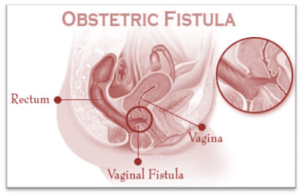

<div class="pages">
  <div data-page="features" class="page no-navbar">
    <div class="page-content">
    
  <div class="navbarpages">
    <div class="navbar_left">
      <div class="logo_text"><a href="odia-home.html"><span>M</span> I <span>D</span> W <span>I</span> V <span>E</span> - <span>GUIDE</span></a></div>
    </div>      
    <a href="#" data-panel="left" class="open-panel">
      <div class="navbar_right"></div>
    </a>
    <a href="odia-home.html" data-panel="right" class="navbgtransblue">
      <div class="navbar_right whitebg"></div>
    </a>          
  </div>
     
     <div id="pages_maincontent">
      
      <h2 class="page_title">ଅବଷ୍ଟେଟ୍ରିକ୍ ଫିଷ୍ଟୁଲା କଣ ଅଟେ ?

</h2>

       
    
    <div class="page_single layout_fullwidth_padding toolbarpage">  
    
    

            <p align="justify"> “ପ୍ରତି ଏକ ମିନିଟରେ ଏକ ମହିଳା ପ୍ରସବ ସମୟରେ ବା ପିଲାଜନ୍ମ ଦେବା ପରେ ମୃତ୍ୟୁବରଣ କରେ ଏବଂ ବଞ୍ଚିଥିବା ମହିଳାଙ୍କ ମଧ୍ୟରେ 20-30 ଜଣ ରୋଗାଗ୍ରସ୍ଥ ହୋଇଥାନ୍ତି, ତାଙ୍କ ମଧ୍ୟରୁ ଜଣେ ମହିଳା ଅବଷ୍ଟେଟ୍ରିକ୍ ଫିଷ୍ଟୁଲା ଦ୍ୱାର ପୀଡ଼ିତ ହୋଇଥାନ୍ତି।”
<br><br>

ଦୀର୍ଘକାଳୀନ ପ୍ରସବଜନିତ ଯନ୍ତ୍ରଣାହେତୁ ଶରୀରର ମଳାଶୟ, ମୂତ୍ରାଶୟ ଓ ଯୋନି ମଧ୍ୟରେ ସୃଷ୍ଟି ହେଊଥିବା ଛ଼ିଦ୍ର ଅବଷ୍ଟେଟ୍ରିକ୍ ଫିଷ୍ଟୁଲା ଅଟେ।
</p>

        
            <a href="odia-home.html" class="button_full">Back</a>
              
              

              

               


          
          </div>
      


          
         
         
      
         
   
      
      
    </div>
  </div>
</div>